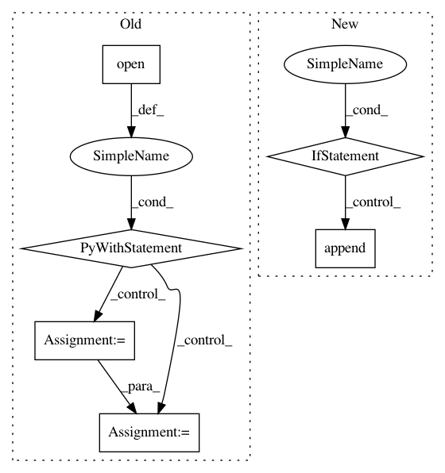

671bde26dc98619355d0005e56c856c6b885c923,secuml/exp/tools/postgresql_specific.py,,load_idents,#Any#Any#Any#,29
Before Change
def load_idents(cursor, filename, dataset_id):
timestamps = False
with open(filename, "r") as f:
reader = csv.reader(f)
header = next(reader)
if len(header) == 3:
timestamps = True
cursor.execute("CREATE TEMPORARY TABLE instances_import("
"user_instance_id integer, "
"ident text, "
"timestamp timestamp DEFAULT null,"
After Change
fields = ["user_instance_id", "ident"]
if has_timestamp:
fields.append("timestamp")
if gt_labels:
fields.append("label")
if gt_families:
fields.append("family")
cursor.execute("CREATE TEMPORARY TABLE instances_import("
"user_instance_id integer, "
"ident text, "
"timestamp timestamp DEFAULT null, "
In pattern: SUPERPATTERN
Frequency: 3
Non-data size: 6
Instances
Project Name: ANSSI-FR/SecuML
Commit Name: 671bde26dc98619355d0005e56c856c6b885c923
Time: 2019-09-03
Author: anael.beaugnon@ssi.gouv.fr
File Name: secuml/exp/tools/postgresql_specific.py
Class Name:
Method Name: load_idents
Project Name: tensorflow/tensorboard
Commit Name: aebedd6592a7e76e6e800b698832704e140ccaad
Time: 2021-03-19
Author: github@wchargin.com
File Name: tensorboard/data/server_ingester.py
Class Name: SubprocessServerDataIngester
Method Name: start
Project Name: studioml/studio
Commit Name: bb6b2d059ad7b8a231d9f8015b41e60f033eaf76
Time: 2017-08-04
Author: peter.zhokhov@sentient.ai
File Name: studio/model.py
Class Name:
Method Name: get_config